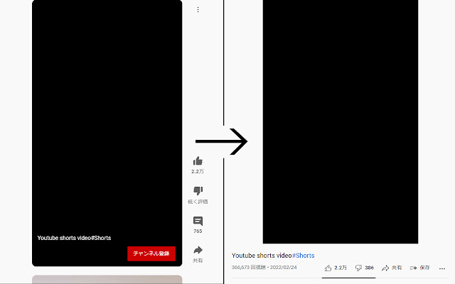

What is Youtube-shorts block?
An open source browser extension for watching Youtube shorts video in a regular video player.
You can also block the shorts themselves.
How it works
Play the Shorts as if it were a normal video

Release notes
v1.3.3(Latest)
Added
v1.3.2
Added
- italian translation from @gioxx
v1.3.1
Changed
- Fixed a bug that redirected links that were not short videos containing the string "shorts"
v1.3.0
Added
- Added "Open in regular player" button in the Shorts player
- Block Shorts-related feeds (if Hide shorts video is enabled)
- Add a Release notes
Changed
- Fixed the problem that the load spinner does not disappear when "Hide Shorts" is selected
- Optimize "hide shorts video"
v1.2.1
Added
v1.2.0
Added
v1.1.0
Added
Changed
- Change the position of the repository link
v1.0.1
Changed
v1.0.0
Added